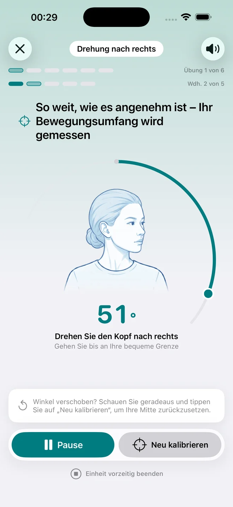
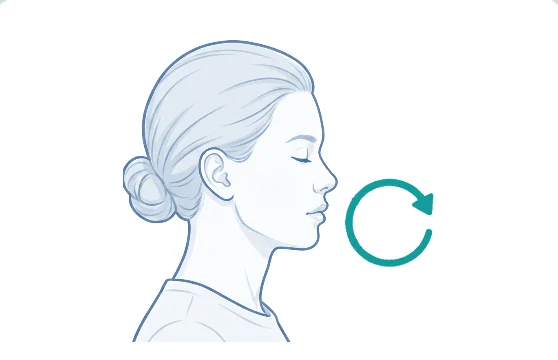
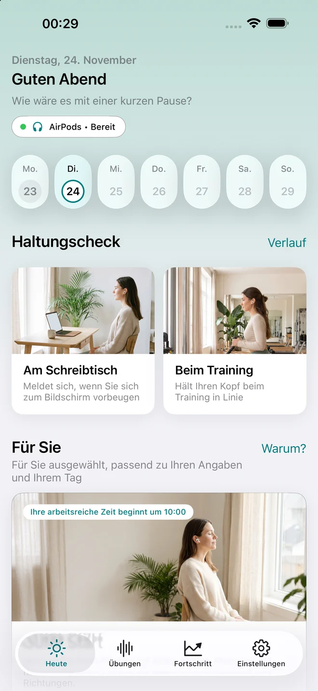
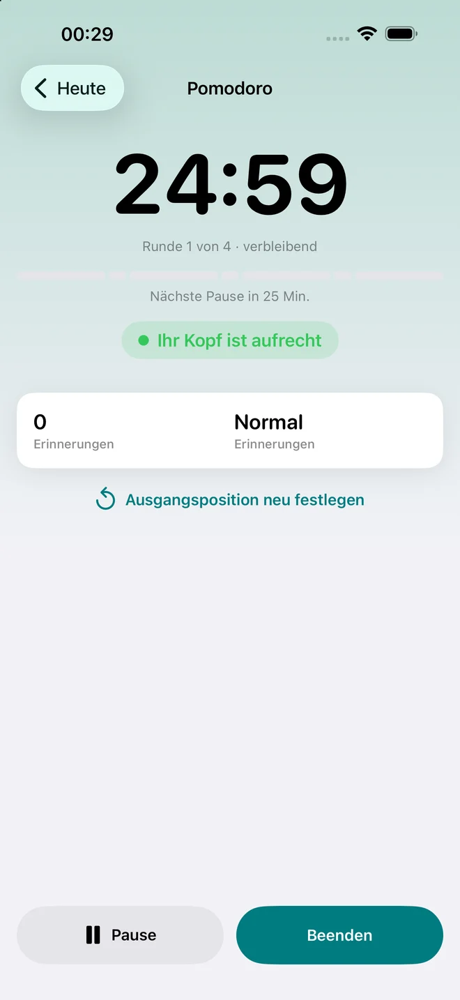

Nacken
Kopfdrehung, Seitneigung, Blick nach unten und oben, Kinn einziehen. AirPods messen den Winkel und zählen die Wiederholungen; ohne sie gibt Nodly das Tempo nach Zeit vor.
Kurze Übungen für Nacken, Atmung, Augen, Hände und Beine, dazu Büro-Yoga. Mit Ihren AirPods misst Nodly Ihre Nackenbewegungen, achtet auf Ihre Haltung und meldet sich, wenn Ihr Kopf zu lange gesenkt bleibt.
Im App Store ladenFür iPhone und iPad · Mit kompatiblen AirPods oder ohne

Nicht nur der Nacken
Kopfdrehung, Seitneigung, Blick nach unten und oben, Kinn einziehen. AirPods messen den Winkel und zählen die Wiederholungen; ohne sie gibt Nodly das Tempo nach Zeit vor.

Langes Ausatmen, Box-Atmung und gleichmäßiges Atmen, 1, 2 oder 3 Minuten lang, geführt von einer Zeichnung und einem sanften Tippen.

Eine zweiminütige Pause vom Bildschirm: in die Ferne schauen, langsam blinzeln, dann mit geschlossenen Augen ausruhen.

Handgelenke dehnen, Handgelenkkreisen, Faust öffnen und schließen – für Tage mit Tastatur und Maus.

Fersenheben, Zehenheben, Kniestrecken und Marschieren im Sitzen, ohne aufzustehen.

Katze-Kuh, Seitbeuge und Drehung im Sitzen, dazu Schulterübungen zum Lockern zwischen zwei Meetings.
Nur die Nackenmessung nutzt AirPods. Alles andere funktioniert ohne.
Gemessen mit Ihren AirPods
Die Bewegungssensoren Ihrer AirPods verfolgen Ihren Kopfwinkel. Erreichen Sie den Zielbereich, meldet sich Nodly mit einem Ton und einem Tippen und zählt die Wiederholung für Sie. Die Ziele passen sich Ihrem eigenen Bewegungsumfang an.
Nodly nutzt die Bewegungssensoren Ihrer AirPods. Keine Kamera, kein zusätzliches Gerät.
Schauen Sie geradeaus und halten Sie einige Sekunden still. Nodly nimmt diese Haltung als 0°.
Erreichen Sie den Zielbereich, meldet sich Nodly mit einem Ton und einem Tippen und zählt die Wiederholung für Sie.
0°
Rechts
Ziehen Sie nach rechts bis in den grünen Bereich und dann zurück zur Mitte.
Wiederholungen: 0


Haltungscheck
Achtet beim Arbeiten auf Ihren Kopf – 30 Minuten bis 2 Stunden lang oder in Pomodoro-Runden aus 25 Minuten Arbeit und 5 Minuten Pause.
Bei Übungen im Stehen erinnert er Sie innerhalb von Sekunden, wenn Ihr Kopf absinkt. Bei Übungen im Liegen pausieren Sie ihn einfach.
Sperren Sie Ihr iPhone und arbeiten Sie weiter. Die verbleibende Zeit sehen Sie auf dem Sperrbildschirm, und dort können Sie auch pausieren oder beenden.
Mit Siri, über das Kontrollzentrum oder mit einer Fokus-Automation in „Kurzbefehle“.
„Haltungscheck in Nodly starten“
Routinen
Beginnen Sie mit einer fertigen Routine wie „Guter Start“ oder „Bildschirmpause“, oder wählen Sie Übungen aus der Bibliothek und bringen Sie sie in Ihre eigene Reihenfolge. „Für Sie“ auf dem Heute-Bildschirm schlägt eine Routine vor, die zu Ihrem Tag und Ihren vollsten Stunden passt.
Fortschritt
Ihre Serie, Ihre Woche und wie sich Ihre Zeit auf Nacken, Atmung, Augen, Hände und Beine verteilt – auf einen Blick. Und je mehr Sie üben, desto aufgeräumter wird ein kleiner 3D-Schreibtisch.
Die Details
Ihr Verlauf und Ihre Routinen werden über Ihre eigene iCloud zwischen iPhone und iPad synchronisiert.
Nackenübungen laufen auch nach Zeit. Die anderen Übungen brauchen nie AirPods.
Eine tägliche Erinnerung, Schreibtischpausen in Ihren vollsten Stunden und ein Wochenrückblick – jeweils optional.
Sprachanleitung, Töne und Haptik führen Sie, damit Ihre Augen vom Bildschirm wegbleiben können.
Große Schriftgrößen, VoiceOver und „Bewegung reduzieren“ auf iPhone und iPad.
Deutsch, Englisch, Türkisch, Spanisch, Französisch, Italienisch, Portugiesisch, Niederländisch, Russisch, Japanisch, Koreanisch und Chinesisch (vereinfacht und traditionell).
Datenschutz und Vertrauen
Bewegungsdaten werden auf Ihrem iPhone verarbeitet, rohe Bewegungsdaten nie gespeichert. Kein Account nötig.
Bewegungen sollen sich langsam und angenehm anfühlen. Fühlt sich etwas nicht richtig an, hören Sie sofort auf. Nodly drängt Sie nie.
Nodly ist eine Wellness-App; sie diagnostiziert oder behandelt keine Erkrankung. Haben Sie Beschwerden am Nacken, sprechen Sie vor dem Beginn mit einer Fachperson im Gesundheitswesen.
Rechtliches
Kein Account, und Ihre Bewegungsdaten verlassen Ihr Gerät nicht. Anonyme Nutzungsstatistiken erheben wir nur mit Ihrer Erlaubnis. Keine Werbung, kein Tracking, kein Verkauf von Daten.
Vollständigen Text lesenNodly gibt es im Monats- oder Jahresabo; berechtigte Nutzerinnen und Nutzer erhalten 7 Tage kostenlos. Sie können jederzeit in den Einstellungen Ihres App Store-Accounts kündigen.
Vollständigen Text lesenBewegen Sie sich langsam und nur in einem angenehmen Bereich. Hören Sie sofort auf, wenn Sie Schmerzen, Schwindel oder Taubheit spüren.
Vollständigen Text lesen